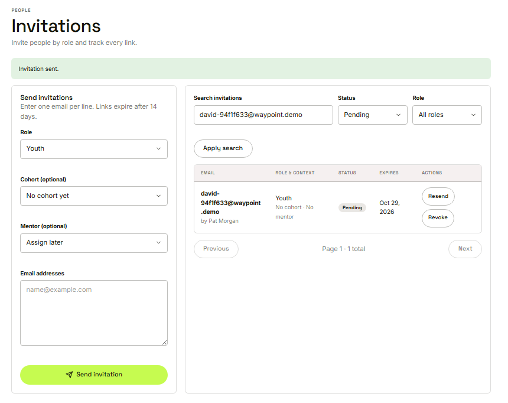
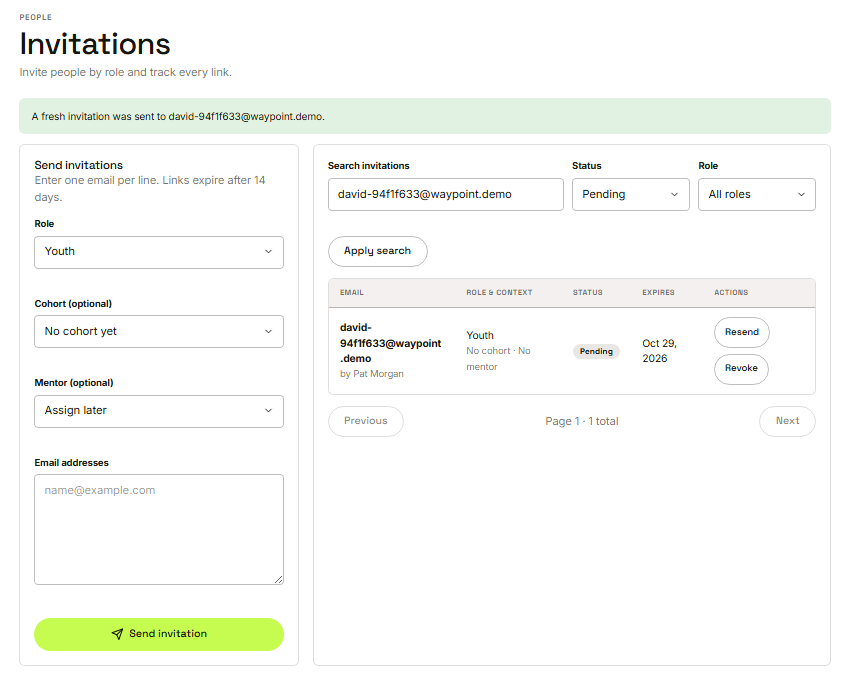
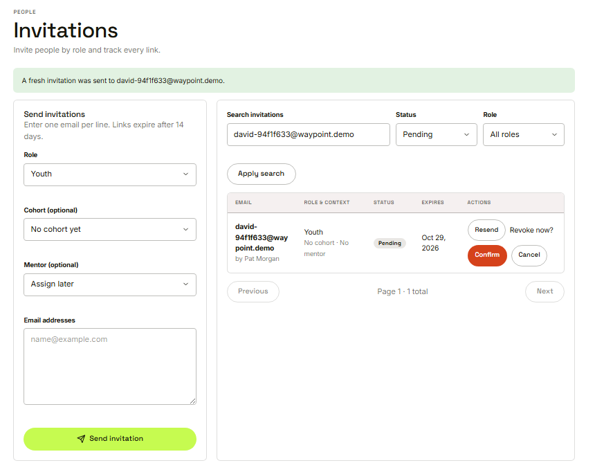
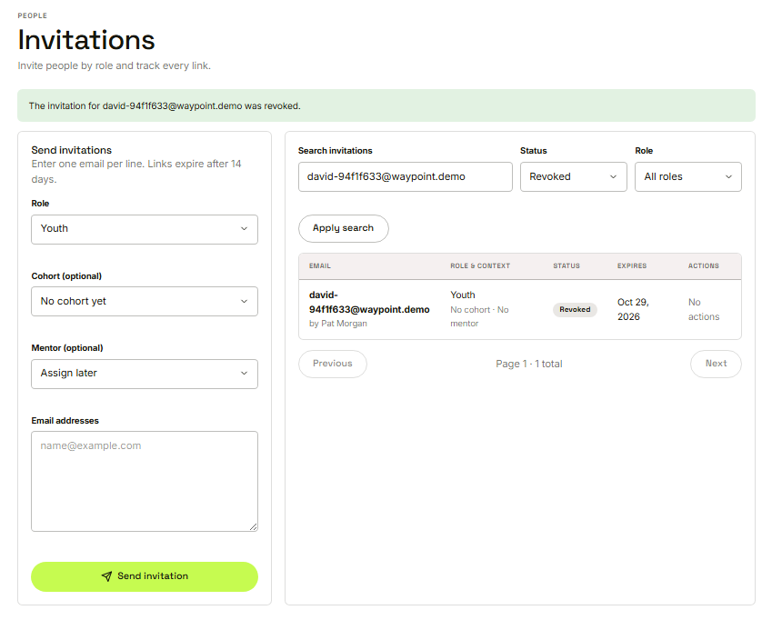

Waypoint · Video 006
Managing pending invitations
Track, resend and revoke
A pending invitation

Status pending, with resend and revoke
Resend gives a fresh link

A fresh invitation was sent
Revoke asks first

Revoke now? Confirm or cancel
Status: revoked

The row now says revoked, with no actions
The link no longer works
This invite is no longer active
Things to remember
Search the invitations and see every status
Resend gives a fresh link and expiry
Revoke asks to confirm, then the link stops at once
A dead link offers a request for a new invite